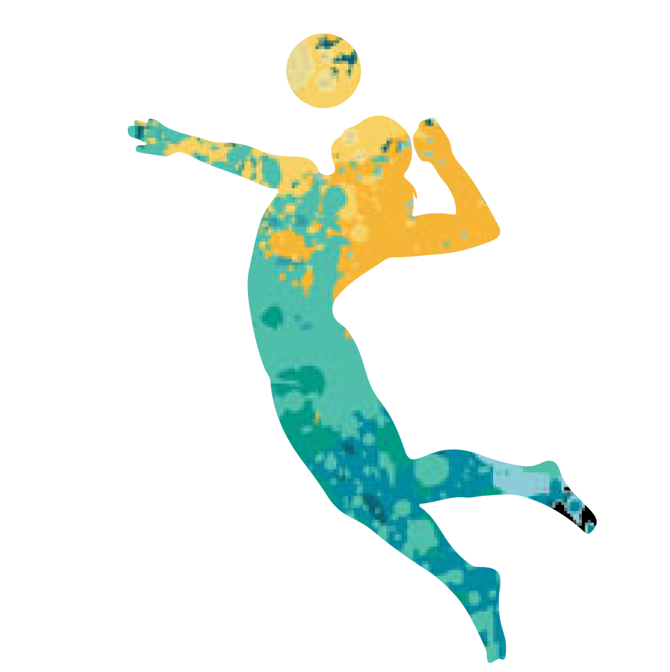

是亞洲女排的傳統勁旅，在世界排壇也佔據一定實力，有「東洋魔女」之稱。
現任主教練為中田久美。現時在國際排聯世界排名中排名第六。
1978年世界女排錦標賽之前所有（13次）世界女子排球三大賽，均由蘇聯和日本包攬冠軍，
當中自日本女排在1960年代初崛起後，女排三大賽冠亞軍也基本由兩隊包攬（除了蘇聯女排缺席的1967年世界女排錦標賽），
而且兩者均是3-4連冠交替，可是兩者對當時世界女排的壟斷性。
此為2016里約奧運球員名單 移動游標查看詳細資料

主攻手
- 長岡望悠
- 木村沙織
- 鍋谷友理枝
- 石井優希
- 迫田沙織

中間手

自由球員
點擊按鈕查看詳細資料
銀牌紀錄
17次
- 奧運
- 世界排球錦標賽
世界盃排球賽
- 世界女排大獎賽
- 亞洲運動會
- 亞洲錦標賽
- 1979
- 1987
- 1991
- 1993
- 2003
- 2011
- 2013
金牌紀錄
16次
- 奧運
- 世界排球錦標賽
世界盃排球賽
- 亞洲運動會
- 亞洲錦標賽
銅牌紀錄
14次
- 奧運
- 世界大冠軍盃排球賽
- 世界女排大獎賽
- 亞洲運動會
- 亞洲錦標賽
- 1989
- 1995
- 1997
- 1999
- 2005
- 2009
1

FIVB排名
第6名
1